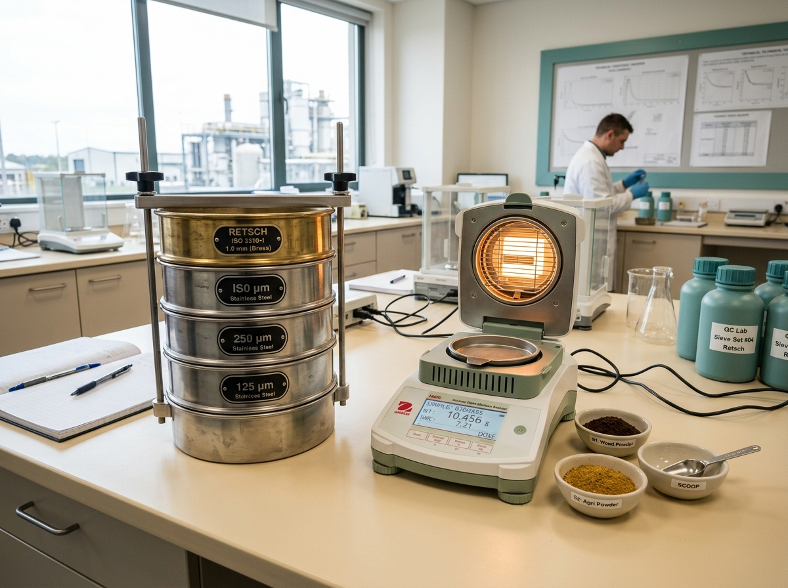

Tepung Industri Presisi untuk Performa Produksi Anda
CV ADC TANJAYA memproduksi serbuk halus dari biomassa dan hasil agro pilihan—mulai dari tepung batok kelapa, tepung kayu, onggok, sekam padi, kulit kopi, kulit kacang, bonggol jagung, hingga tepung perekat—dengan konsistensi ukuran partikel (mesh) dan kadar air terukur untuk kelancaran lini produksi pabrik Anda.

Pabrik, Biomassa, Plywood, Pakan & Pupuk
Mesh, Kadar Air & Campuran Khusus
Kenapa Memilih CV ADC TANJAYA
Kami memahami bahwa kelancaran mesin produksi pabrik Anda bergantung pada stabilitas bahan baku tepung industri di setiap pengiriman.
Bahan Baku Pilihan
Berasal dari jaringan pemasok biomassa dan hasil agro terkurasi, melalui proses sortir awal untuk meminimalkan batu, logam, pasir, maupun kontaminan asing.
Kehalusan (Mesh) Konsisten
Sistem penggilingan dan multi-ayakan (vibrating/rotary sieve) memastikan distribusi partikel seragam sehingga mudah tercampur sempurna di lini mesin Anda.
Kontrol Kualitas Ketat
Pemantauan kadar air (moisture content), kemurnian serbuk, dan ketelusuran kode batch di setiap karung demi mencegah penggumpalan dan menjaga daya simpan.
Pasokan & Pengiriman Andal
Didukung kapasitas gudang penyangga dan armada logistik ke berbagai kawasan industri untuk mendukung kontrak pasokan rutin secara tepat waktu.

Mengenal Tepung Industri Berbasis Biomassa & Agro
Tepung industri adalah serbuk halus non-pangan yang dihasilkan melalui proses pengeringan, penggilingan mekanis, dan pengayakan presisi terhadap biomassa serta hasil samping agroindustri—seperti batok kelapa, kayu, onggok singkong, sekam padi, kulit kopi, kulit kacang, dan bonggol jagung.
Dengan kandungan alami selulosa, hemiselulosa, lignin, dan silika, tepung industri menjadi komponen fungsional yang ekonomis sebagai bahan pengisi (filler), pengikat (binder/extender), matriks pembawa nutrisi pakan/pupuk, hingga bahan bakar biomassa bersih.
Ramah Lingkungan & Ekonomi Sirkular
Mengubah potensi hasil samping perkebunan dan kehutanan menjadi bahan baku industri bernilai tambah tinggi dan terbarukan.
Serbaguna untuk Banyak Industri
Dapat diaplikasikan pada manufaktur kayu lapis, papan partikel, komposit WPC, pabrik pakan ternak, pupuk organik, hingga energi biomassa.
Produk Unggulan CV ADC TANJAYA
Pilih kategori aplikasi industri di bawah ini atau klik pada kartu produk untuk melihat detail spesifikasi teknis dan meminta penawaran.
*Catatan: Daftar produk dan ilustrasi di atas merupakan struktur katalog standar (placeholder) yang dikelola melalui file js/products.js dan dapat disesuaikan dengan lini produksi aktual CV ADC TANJAYA.
Alur Produksi Tepung Industri Terintegrasi
Lima tahapan terkontrol dari hulu ke hilir untuk memastikan setiap karung tepung industri yang tiba di pabrik Anda memiliki kualitas yang presisi.
Pengumpulan Bahan Baku
Seleksi dan sortir bahan baku biomassa & hasil agro dari mitra terkurasi, bebas dari cemaran pasir, logam, atau bahan asing.
Pengeringan Terukur
Penurunan kadar air bahan baku hingga mencapai batas kelembapan target agar mudah digiling halus dan tahan disimpan lama.
Penggilingan & Penghalusan
Proses penghancuran (crushing) dan penghalusan menggunakan mesin hammer mill & pulverizer berkapasitas industri.
Pengayakan (Mesh) & QC
Pemisahan ukuran partikel pada ayakan mesh presisi disertai uji laboratorium terhadap kehalusan dan kadar air setiap batch.
Pengemasan & Pengiriman
Pengemasan rapat dalam karung PP woven atau Jumbo Bag tahan lembap, siap dikirim terjadwal menuju gudang pabrik Anda.
Aplikasi & Industri yang Kami Layani
Produk tepung industri CV ADC TANJAYA dirancang untuk memenuhi parameter teknis di enam sektor manufaktur dan agroindustri utama.
Biomassa & Energi
Bahan baku pembuatan briket arang/biomassa, wood pellet, co-firing boiler uap industri, dan bahan bakar padat ramah lingkungan.
Papan Partikel & Woodworking
Suplai serbuk selulosa dan ekstender lem untuk manufaktur kayu lapis (plywood), MDF, blockboard, particle board, dan dempul kayu.
Pakan Ternak
Sumber serat terukur, pengikat (binder) pelet pakan, serta matriks pembawa (carrier) vitamin, mineral, dan aditif cair premix ternak.
Pupuk Organik & Media Tanam
Bahan baku karbon organik, carrier mikroba pupuk hayati granul/cair, pembenah struktur tanah, serta substrat budidaya jamur industri.
Perekat & Manufaktur
Pengontrol viskositas resin UF/PF, perekat laminasi kertas/karton industri, pembuatan obat nyamuk bakar, dan absorben tumpahan oli.
Komposit & Filler
Pengisi penguat (reinforcing filler) untuk Wood Plastic Composite (WPC), cetakan polimer termoset/termoplastik, dan biokomposit.
Panduan Memilih Tepung Industri
Bandingkan karakteristik fungsional setiap jenis tepung industri kami. Produk dengan tanda bintang emas merupakan varian yang paling sering dipesan oleh mitra pabrik.
| Nama Produk Tepung | Aplikasi Utama | Ukuran Partikel (Mesh) | Kadar Air | Karakter Material | Kemasan | Spesifikasi |
|---|
Formulasi Khusus Sesuai Parameter Mesin Pabrik Anda
Butuh kehalusan mesh tertentu, batas kelembapan spesifik, atau pencampuran (blending) dua hingga tiga jenis serbuk biomassa sekaligus? Tim teknis CV ADC TANJAYA siap menyiapkan formulasi khusus untuk efisiensi produksi Anda.
Bahan Baku Berkualitas
Seleksi biomassa murni bebas cemaran untuk menjaga stabilitas reaksi dan kekuatan produk akhir.
Formulasi Sesuai Kebutuhan
Kustomisasi ukuran partikel (mesh), kadar air, dan proporsi campuran sesuai resep R&D pembeli.
Kontrol Mutu Ketat
Pengujian sampel berkala pada setiap batch produksi agar tetap presisi sesuai standar yang disepakati.
Rantai Pasok Efisien
Pengemasan fleksibel (Karung PP / Jumbo Bag) dan pengiriman terjadwal guna mendukung efisiensi gudang Anda.

Komitmen Kualitas & Keberlanjutan Industri
CV ADC TANJAYA berkomitmen mengolah hasil samping agro dan biomassa lokal menjadi produk tepung industri bernilai tambah tinggi. Pendekatan ini tidak hanya membantu pabrik mitra mendapatkan bahan baku fungsional yang kompetitif, tetapi juga mendukung ekosistem industri hijau dan pengurangan limbah organik di Indonesia.
Setiap pengiriman didukung oleh prosedur kontrol mutu internal—meliputi pemeriksaan kehalusan mesh, pengujian kadar air, dan pemeriksaan keutuhan kemasan—serta komitmen ketepatan jadwal pengiriman ke pabrik Anda.
Pertanyaan yang Sering Diajukan (FAQ)
Informasi seputar prosedur pemesanan, minimum order, pengiriman sampel uji, hingga kustomisasi ukuran mesh.
Diskusikan Kebutuhan Pasokan Tepung Industri Anda
Isi formulir di bawah ini untuk mendapatkan penawaran harga terbaik, konsultasi spesifikasi mesh, atau permintaan pengiriman sampel uji ke pabrik Anda.
Formulir Permintaan Penawaran & Sampel
Pesan Anda akan diformat otomatis untuk dikirim langsung ke WhatsApp resmi atau Email tim marketing CV ADC TANJAYA.
CV ADC TANJAYA
Kawasan Industri & Pergudangan Agro [Placeholder Alamat Lengkap Pabrik], Jawa Timur, Indonesia
+62 812-3456-7890 (Placeholder)
Senin – Sabtu: 08.00 – 17.00 WIB